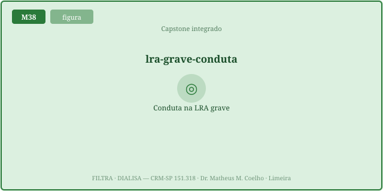
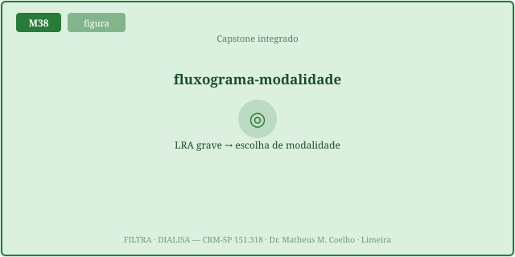
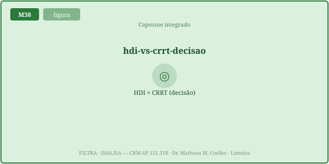
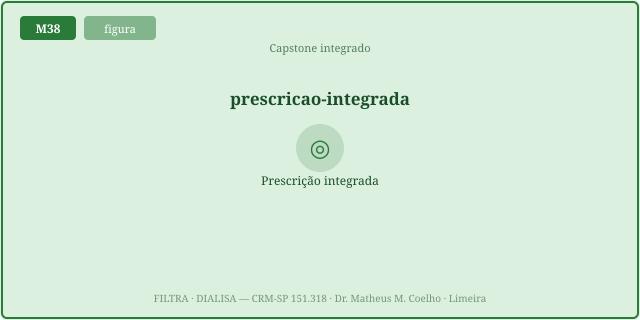
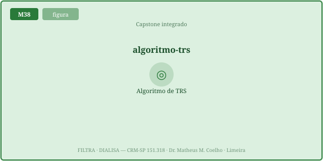
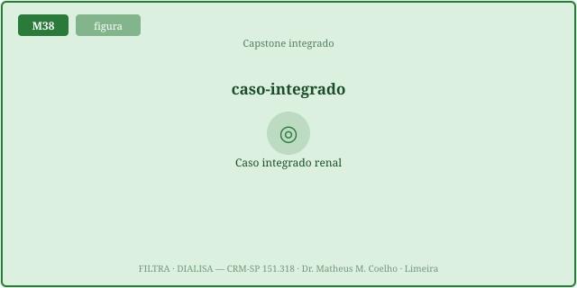
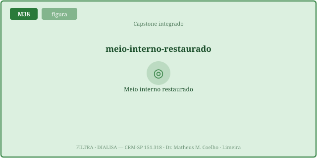

A modalidade e a dose saem do mecanismo descompensado, não de uma
receita. A lógica em três perguntas: (1) instabilidade (estável × instável) → contínuo × intermitente;
(2) velocidade necessária de clearance (K alto / intoxicação pedem rápido) → HDI; (3) sangramento →
citrato × heparina. As Fig. 1–8 voltam no Caso, na Trilha e na Avaliação. Atribuição em CREDITS.md
(em curadoria).
Antes de qualquer prescrição, três perguntas filtram a decisão. Está instável? (PAM baixa, vasopressor) → a máquina precisa ser gentil e contínua. Precisa de remoção rápida? (K⁺ alto com ECG, intoxicação dialisável) → precisa de gradiente alto em poucas horas → HDI. Risco de sangrar? → a anticoagulação do circuito vira regional.

Pense num plano: eixo horizontal = velocidade necessária (lento → rápido); eixo vertical = instabilidade (estável → instável). Instável (em cima) → TRRC/CVVHDF: contínua, retira volume devagar e tolera a hemodinâmica frágil (ponte M24/M27/M28). Estável + rápido (canto inferior direito) → HDI: gradientes altos, clearance veloz (M22). O meio-termo é SLED (M31); o crônico estável, DP (M30).


Escolhida a modalidade, a dose também é mecanismo. HDI: Kt/V-alvo (~1,2/sessão) e o tempo (h). TRRC: efluente ~25 mL/kg/h (faixa 20–35) com pré/pós-diluição (M28); catabolismo alto pede dose maior. UF (mL/h) pela tolerância: instável → UF baixa, para não exceder o refilling (M24). E a 1ª sessão muito urêmica é gentil (Kt/V e tempo menores) para evitar o desequilíbrio (M34).


O sangue coagula no circuito extracorpóreo; é preciso anticoagular. Se o paciente sangra (ou tem risco alto), usa-se citrato regional: ele quela o Ca²⁺ só dentro do circuito (a coagulação precisa de cálcio), e repõe-se cálcio no retorno — o paciente não é anticoagulado. Sem risco de sangramento, heparina sistêmica é mais simples (M29).

É o fecho do braço. A máquina, prescrita por mecanismo, restaura o meio interno: K⁺ cai por difusão, HCO₃⁻ sobe pelo tampão do banho/reposição, o volume cai pela UF — tudo no ritmo que a hemodinâmica tolera. A diálise não substitui o rim; substitui, por física, as funções que ele defendia (volume, eletrólitos, ácido-base, escórias) até o rim voltar — ou indefinidamente.

UTI. Cinco apresentações de LRA grave. A pergunta de cada uma: qual modalidade, qual dose, qual anticoagulação — e por quê? Volte às Fig. 2, 4 e 5: o mecanismo decide.
Não. Sai do mecanismo descompensado: a estabilidade e a velocidade necessária escolhem; o sangramento escolhe a anticoagulação. Não há "dose universal" de diálise.
Porque a terapia contínua retira volume devagar (UF lenta ao longo de 24 h), mantendo a PAM. A HDI tiraria muito em poucas horas e o paciente instável não tolera (UF > refilling → hipotensão/stunning, M24).
Quando o paciente está estável e precisa de remoção rápida: hipercalemia ameaçadora com ECG, intoxicação dialisável. A HDI tem o maior clearance por hora (gradiente alto, M22).
A híbrida (M31): eficiência intermediária por mais horas. Entra na instabilidade intermediária — tira volume de forma mais controlada que a HDI, sem o custo logístico da TRRC.
O efluente em mL/kg/h (~25, faixa 20–35) e a fração de pré/pós-diluição (M28). Catabolismo alto pede dose um pouco maior; a pré-diluição protege a membrana e reduz coágulo.
Kt/V-alvo (~1,2/sessão) e o tempo (h). A 1ª sessão muito urêmica usa Kt/V e tempo menores (gentil) para não baixar a ureia rápido demais.
Porque a água sai do plasma e o refilling a repõe do interstício com atraso. Se a UF excede o refilling, o volume plasmático cai → hipotensão intradialítica e stunning miocárdico (M24). Instável → UF baixa.
Sangramento alto → citrato regional: quela o Ca²⁺ só no circuito (a coagulação precisa de cálcio), repõe-se cálcio no retorno — o paciente não é anticoagulado. Sem risco → heparina sistêmica, mais simples (M29).
A máquina não substitui o rim: substitui, por física (difusão/convecção/UF, M19), as funções que ele defendia — volume, eletrólitos, ácido-base, escórias. Prescrita por mecanismo, devolve o meio interno à faixa no ritmo que a hemodinâmica tolera.
Os controles do Lab movem o ponto neste plano. Eixo horizontal = velocidade necessária de clearance (esquerda lento, direita rápido); eixo vertical = instabilidade hemodinâmica (baixo estável, alto instável). A curva azul é a fronteira acima da qual a escolha vira contínua (TRRC); o marcador é o paciente atual, colorido pela modalidade recomendada. Acima da curva → contínuo gentil; abaixo, à direita → rápido (HDI).
| Saída | Atual | Comentário |
|---|---|---|
| Modalidade recomendada | — | estabilidade × velocidade |
| Índice de instabilidade / velocidade | — | os dois eixos da decisão |
| Prescrição da dose | — | Kt/V · tempo · efluente |
| UF rate (mL/h) | — | pela tolerância (UF < refilling) |
| Anticoagulação | — | citrato regional × heparina |
| Meio interno previsto (K⁺ · HCO₃⁻ · volume) | — | após a prescrição |